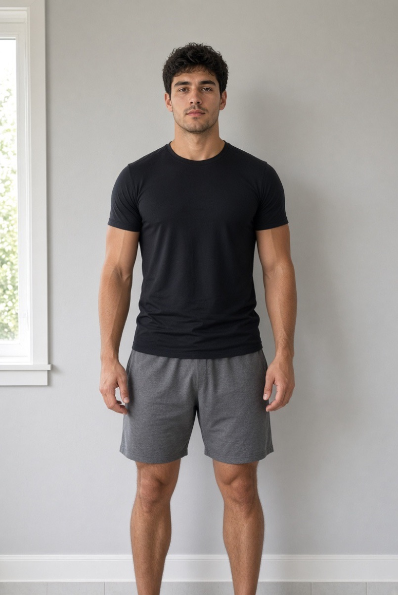

VoltAI sample photos for App Review
Use these photos to test VoltAI on a device without taking new pictures.
How to use them
- Open this page in Safari on the test iPhone.
- Touch and hold each photo, then tap Save to Photos (or tap Download and save it).
- In VoltAI, tap Scan → New scan → Start → Agree and continue, then tap Library on each step and choose the matching photo.
- For Fridge AI (VoltAI Pro), tap Library and choose the fridge photo, or just type a few foods such as "chicken, rice, broccoli" and tap Find recipes.
Results take about 20–40 seconds. The AI asks for a retake only if a photo is too dark, blurry, or doesn't show a clothed person.

Scan · step 2
Body photo (front)
Gym wear, head to at least the hips in frame.

Download body photo

Questions: voltaifitness@gmail.com · Privacy Policy